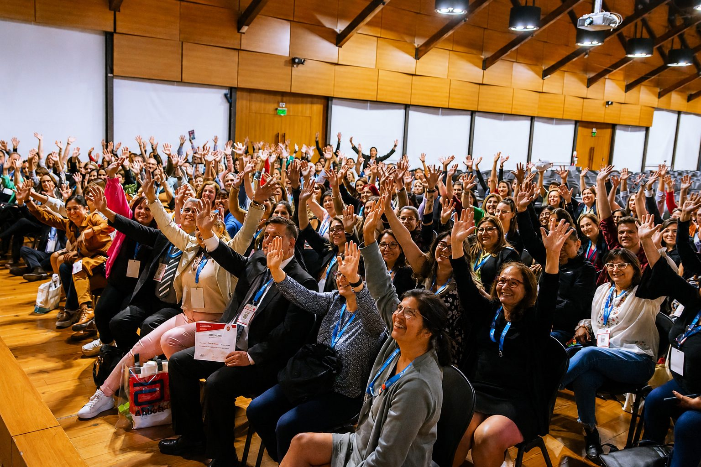
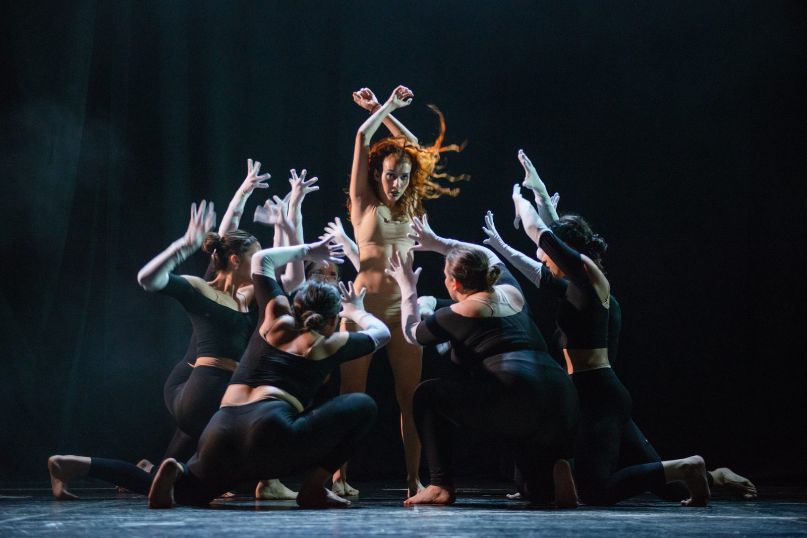
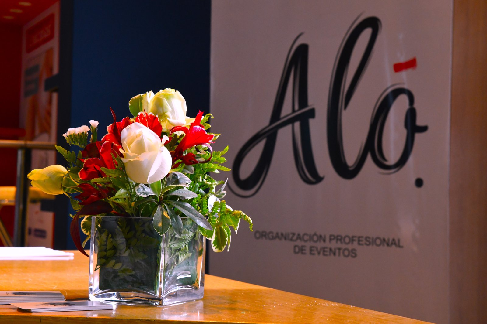

pAsión
Define nuestra personalidad, la entrega, dedicación y compromiso, generando confianza y seguridad en los clientes.
Planificamos, coordinamos y producimos eventos corporativos, científicos, sociales y artísticos con una mirada cercana, creativa y profesional.




Te acompañamos desde el primer boceto hasta el cierre del evento: concepto, proveedores, producción, coordinación y detalles que marcan la diferencia.
Define nuestra personalidad, la entrega, dedicación y compromiso, generando confianza y seguridad en los clientes.
Más de 20 años de trayectoria conduciendo equipos, proveedores y tiempos con seguridad, experiencia y visión estratégica antes, durante y después del evento.
Es nuestro motor estratégico y la responsabilidad de no conformarse con lo convencional, aspirando siempre a superar las expectativas del cliente y redefinir los estándares del sector en la búsqueda de la excelencia.

Mariana R. Martínez, Fundadora y Directora de Aló. Técnica Superior en Organización Profesional de Eventos recibida en COE. Diplomada en Turismo de Reuniones AOCA - Universidad Blas Pascal. Miembro de AOCA y AOFREP, dos instituciones referentes de la industria MICE.
“Hace más de 20 años que reafirmo que soy una apasionada por lo que hago: crear experiencias únicas.”
Presidente de la AACOG 2024
“La organización estuvo impecable, han estado al par nuestro.”
Presidente del VIII Congreso Internacional de la AIACH
“Fue un exitazo, gracias al equipo de Aló.”
Tesorera de la AIACH
“Tremenda organización.”